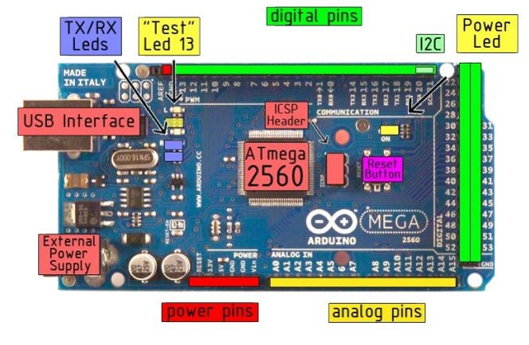

L’intérêt de ce projet réside dans le fait que l’agriculture intelligente est une technologie récente mais qui se développe rapidement, le but du projet est donc de créer un outil permettant de contrôler les commodités d’une ferme à distance afin de faciliter la vie des agriculteurs.
| Arduino Méga 2560 |  |
Carte Raspberry Pi3 |
|---|
| Module Bluetooth HC-06 | Capteur de Gaz MQ-2 |
|---|
| Ultrasonique HC-SR04 | Capteur de température/humidité DHT11 |
|---|
| Le capteur de flamme KY-026 | Le capteur d’humidité de sol (IM121017001) |
|---|
plus: Deux servomoteurs, Deux ventilateurs, Deux pompes, Webcam, photorésistance, Des résistances, Des LEDs, Buzzer et des Relais.
Visitez le site Web d'ici
Telecharger ici
Dans ce chapitre, nous avons présenté en détail les modules nécessaires de notre projet. Nous avons commencé par la présentation du matériel utilisés et expliqué leurs fonctionnements, ensuite nous avons donné une description des logiciels appliquer dans notre réalisation.